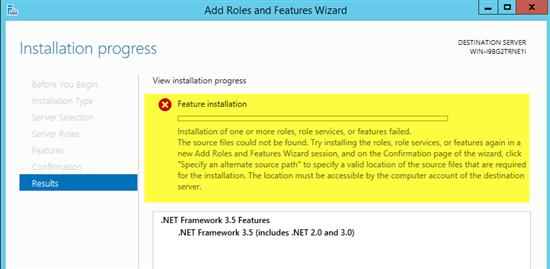
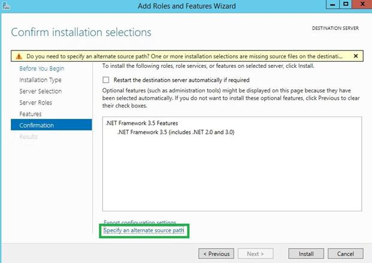
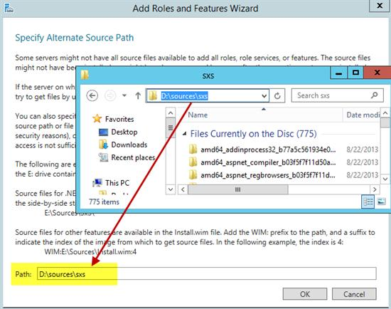

В Windows Server 2012 R2 по умолчанию отсутствует .NET Framework 3.5 и более старых версий, хотя многие приложения до сих пор требуют для работы эти версии. Установка более новых версий производится без проблем из локального кэша системы. Проблема в том, что версия 3.5 отсутствует в локальном кэше, и, по идее, Windows должен скачать её с серверов обновлений Microsoft по запросу пользователя, но зачастую этого не происходит.
Если попытаться просто добавить компонент ".NET Framework 3.5 Features", то получим ошибку: "Не удалось установить одну или несколько ролей, служб ролей или компонентов. Не удалось найти исходные файлы...".

Решение:
1. Установка .NET Framework 3.5 производится с DVD-диска Windows Server 2012R2. Подключаем диск.
2. Через Менеджер сервера заходим в добавление компонентов.
3. Нажимаем на ссылку снизу: "Указать альтернативное расположение".

4. Набираем в поле ввода: "D:\sources\sxs"

5. Продолжаем установку. .NET Framework 3.5 должен успешно установиться.